5 Analysis of Historical Data
5.1 Introduction
To set up the experience, first load tha data into the space environement as well as the required packages.
# install if necessary using 'install.packages'
library(tidyverse)
library(lubridate)
library(ggplot2)
library(plotly)
library(dplyr)
library(scales)
library(pipeR)
library(CGPfunctions)
# load the data with read()
data_monthly <- read.csv("C:/Users/Laurent/OneDrive - ROCS/VI/monthly_visits.csv", header=TRUE, fileEncoding="UTF-8-BOM")data_monthly <- data_monthly %>%
mutate(month = as.Date(month)) %>%
mutate(year = as.character(year))
as_tibble(data_monthly)## # A tibble: 54 x 6
## name month pid visits year mm
## <chr> <date> <int> <dbl> <chr> <chr>
## 1 Training Shopping Centre 2017-01-01 100001 1715887 2017 Jan
## 2 Training Shopping Centre 2017-02-01 100001 1606814 2017 Feb
## 3 Training Shopping Centre 2017-03-01 100001 1662214 2017 Mar
## 4 Training Shopping Centre 2017-04-01 100001 1603849 2017 Apr
## 5 Training Shopping Centre 2017-05-01 100001 1769676 2017 May
## 6 Training Shopping Centre 2017-06-01 100001 1684730 2017 Jun
## 7 Training Shopping Centre 2017-07-01 100001 1894138 2017 Jul
## 8 Training Shopping Centre 2017-08-01 100001 1681012 2017 Aug
## 9 Training Shopping Centre 2017-09-01 100001 1626082 2017 Sep
## 10 Training Shopping Centre 2017-10-01 100001 1609592 2017 Oct
## # ... with 44 more rows## name month pid visits year mm
## 1 Training Shopping Centre 2017-01-01 100001 1715887 2017 Jan
## 2 Training Shopping Centre 2017-02-01 100001 1606814 2017 Feb
## 3 Training Shopping Centre 2017-03-01 100001 1662214 2017 Mar
## 4 Training Shopping Centre 2017-04-01 100001 1603849 2017 Apr
## 5 Training Shopping Centre 2017-05-01 100001 1769676 2017 May
## 6 Training Shopping Centre 2017-06-01 100001 1684730 2017 Jun## visits
## Min. : 342593
## 1st Qu.:1604309
## Median :1670655
## Mean :1578285
## 3rd Qu.:1737303
## Max. :2151060first grapgh
p <- ggplot(data=data_monthly, aes(x=month, y=visits)) +
scale_y_continuous(labels = scales::comma) +
geom_area( fill="#69b3a2", alpha=0.4) +
geom_line(color="#69b3a2") +
geom_point(size=2, colour = "azure4") +
theme_light() +
scale_x_date(labels = scales::label_date("%B\n%Y"))+
labs(y="total visits",
x="date",
title = paste("Total visits"))
ggplotly(p) 5.1.0.0.0.1
base <- ggplot(data_monthly, aes(month, visits)) +
scale_y_continuous(labels = scales::comma)+
geom_point(colour = "blue" ,
size = 3,
na.rm = TRUE)+
geom_line(na.rm = TRUE,
colour = "blue")+
annotate(
geom = "segment", x = ymd("2020-03-23"), y = 2000000, xend = ymd("2020-03-23"), yend = 1800000,
arrow = arrow(length = unit(2, "mm"))
) +
annotate(geom = "text", x = ymd("2020-03-12"), y = 2150000, label = "lockdown\n23 March 2020", hjust = "left")
base +
scale_x_date(labels = scales::label_date("%B\n%Y"))+
labs(y="total visits",
x="date",
title = paste("Total visits"),
caption = "Source: Visitor Insights")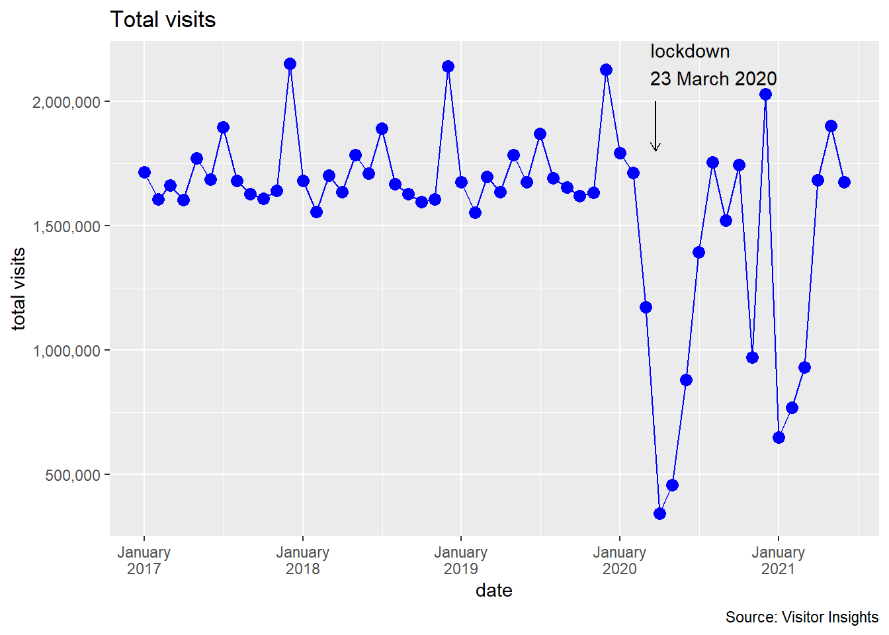
data_monthly <- data_monthly %>%
mutate(mm = fct_relevel(mm,
"Jan", "Feb", "Mar","Apr", "May", "Jun",
"Jul", "Aug", "Sep", "Oct", "Nov", "Dec"))
base2 <- ggplot(data_monthly, aes(mm, visits, color = year)) +
scale_y_continuous(labels = scales::comma)+
geom_line(aes(group = year), size = 1)+
geom_point(aes(group = year), size = 3)+
scale_fill_manual('Program Type')
base2 +
theme(legend.position = "bottom") +
labs(y="total visits",
x="month",
title = paste("Total visits by month"),
caption = "Source: Visitor Insights")
base3 <- ggplot(data_monthly, aes(mm, visits, color = year)) +
scale_y_continuous(labels = scales::comma) +
geom_line(aes(group = year), size = 1)+
geom_point(aes(group = year), size = 3)+
scale_fill_manual('Program Type')+
facet_wrap(~year,nrow = 2)
base3 +
theme(legend.position = c(1, 0), legend.justification = c(2.5, 0))+
labs(y="total visits",
x="month",
title = paste("Total visits by month"),
caption = "Source: Visitor Insights")
data_year <- select(data_monthly, year, visits) %>%
filter (year == "2017"| year == "2018" | year == "2019" | year == "2020") %>%
group_by(year) %>%
summarize(visits = sum(visits))g4 <- ggplot(data_year, aes(year, visits)) +
geom_bar(stat="identity") +
scale_y_continuous(labels = comma_format(), limits = c(0, 22000000)) +
theme_grey() +
geom_col(fill = "gray41") +
geom_text(aes(y = visits, label = scales::comma(round(visits), accuracy=1)),
position = position_dodge(width = 0.9),
size = 5,
colour = "black",
vjust = -1.0) +
labs(y="total visits",
x="year",
title="Year-end visits",
caption = "Source: Visitor Insight")
g4
data_daily <- read.csv("C:/Users/Laurent/OneDrive - ROCS/VI/daily_visits.csv")
data_daily <- mutate(data_daily,
date =as.Date(day, format="%d/%m/%Y"))
data_daily <- mutate (data_daily,
wday = wday(date, label = TRUE),
week = week (date),
year = year (date),
month = month (date),
hour = hour (date))
as_tibble(data_daily)## # A tibble: 1,582 x 13
## PID postcode asset name day visits mm year month date wday
## <int> <chr> <chr> <chr> <chr> <dbl> <int> <dbl> <dbl> <date> <ord>
## 1 374342 DY5 1QX Merry~ Merry~ 01/0~ 48250. 3 2017 3 2017-03-01 Wed
## 2 374342 DY5 1QX Merry~ Merry~ 02/0~ 53097. 3 2017 3 2017-03-02 Thu
## 3 374342 DY5 1QX Merry~ Merry~ 03/0~ 60116. 3 2017 3 2017-03-03 Fri
## 4 374342 DY5 1QX Merry~ Merry~ 04/0~ 71824. 3 2017 3 2017-03-04 Sat
## 5 374342 DY5 1QX Merry~ Merry~ 05/0~ 55379. 3 2017 3 2017-03-05 Sun
## 6 374342 DY5 1QX Merry~ Merry~ 06/0~ 47432. 3 2017 3 2017-03-06 Mon
## 7 374342 DY5 1QX Merry~ Merry~ 07/0~ 47754. 3 2017 3 2017-03-07 Tue
## 8 374342 DY5 1QX Merry~ Merry~ 08/0~ 48904. 3 2017 3 2017-03-08 Wed
## 9 374342 DY5 1QX Merry~ Merry~ 09/0~ 50120. 3 2017 3 2017-03-09 Thu
## 10 374342 DY5 1QX Merry~ Merry~ 10/0~ 58124. 3 2017 3 2017-03-10 Fri
## # ... with 1,572 more rows, and 2 more variables: week <dbl>, hour <int>data_daily <- data_daily %>%
mutate(wday = fct_relevel(wday,
"Mon", "Tue", "Wed","Thu", "Fri", "Sat",
"Sun"))
data_daily_avg <- data_daily %>%
group_by(wday) %>%
summarize(visits = mean(visits))
g4 <- ggplot(data_daily_avg, aes(x = wday, y = visits)) +
geom_col(fill = "cyan4") +
scale_y_continuous(labels = scales::comma) +
geom_text(aes(label = round(visits, 0)), vjust = -0.2)
g4 +
labs(y="average daily visits",
x="day",
caption = "Source: Visitor Insights")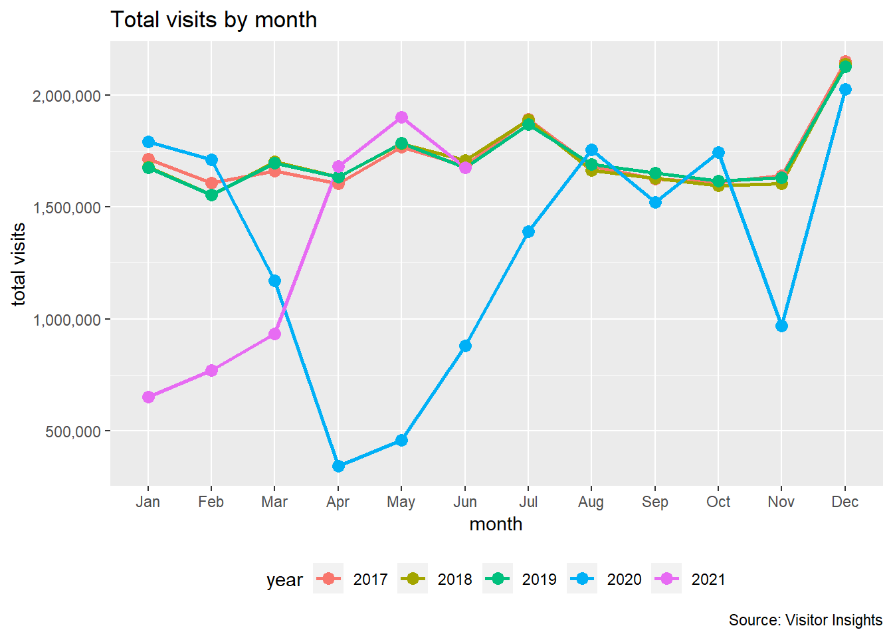
## `summarise()` has grouped output by 'wday'. You can override using the `.groups` argument.g5 <- ggplot(data_daily_avg_year, aes(x = wday, y = visits)) +
geom_col(fill = "cyan4")+
scale_y_continuous(labels = scales::comma) +
geom_text(aes(label = round(visits, 0)), vjust = -0.2, size = 2.5) +
facet_wrap(~year)
g5 +
labs(y="average daily visits",
x="day",
caption = "Source: Visitor Insights")
g5 <- ggplot(data_daily, aes(x=wday,y=visits, fill=wday)) +
scale_y_continuous(labels = scales::comma) +
geom_boxplot(outlier.shape = 1) +
facet_wrap(~year) +
coord_cartesian(ylim = c(0, 150000)) +
stat_summary(fun = mean, geom="point", shape=20, size = 2, color = "red", fill = "red")+
labs(y="daily visits",
x="day",
title="Visits by day",
caption = "Source: Ellandi")
g5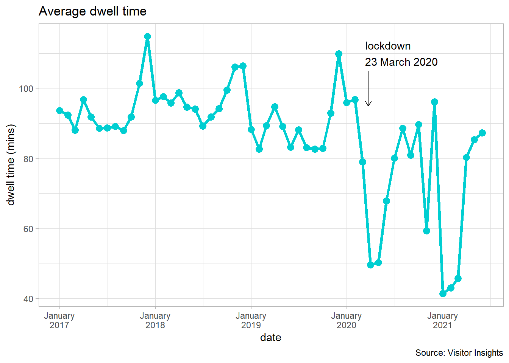
data_frequency <- read.csv("C:/Users/Laurent/OneDrive - ROCS/VI/visit_frequency.csv", header=TRUE, fileEncoding="UTF-8-BOM")
as_tibble(data_frequency)## # A tibble: 25 x 5
## pid name frequency pct year
## <int> <chr> <chr> <dbl> <int>
## 1 374342 Training Shopping Centre weekly 0.0347 2017
## 2 374342 Training Shopping Centre half yearly 0.233 2017
## 3 374342 Training Shopping Centre quarterly 0.232 2017
## 4 374342 Training Shopping Centre monthly 0.128 2017
## 5 374342 Training Shopping Centre anually 0.248 2017
## 6 374342 Training Shopping Centre monthly 0.0661 2018
## 7 374342 Training Shopping Centre anually 0.281 2018
## 8 374342 Training Shopping Centre weekly 0.0138 2018
## 9 374342 Training Shopping Centre half yearly 0.192 2018
## 10 374342 Training Shopping Centre quarterly 0.167 2018
## # ... with 15 more rows# then ordering the frequencies
data_frequency <- data_frequency %>%
mutate(frequency = fct_relevel(frequency,
"anually", "half yearly", "quarterly",
"monthly", "weekly"))
g6 <- ggplot(data_frequency, aes(fill= frequency, y= pct, x= year)) +
geom_bar(position="dodge", stat="identity", colour = "black", fill = "darkcyan") +
geom_text(aes(label = scales::percent((pct),.2),
y = pct,
group = year,),
position = position_dodge(width = 0.9),
vjust = 1.5,
colour="white",
size = 3) +
facet_wrap(~frequency) +
theme(legend.position="none") +
scale_y_continuous(labels=percent) +
xlab("")+
labs(y="perc",
x="",
title="Visit Frequency",
caption = "Source: Visitor Insight")
g6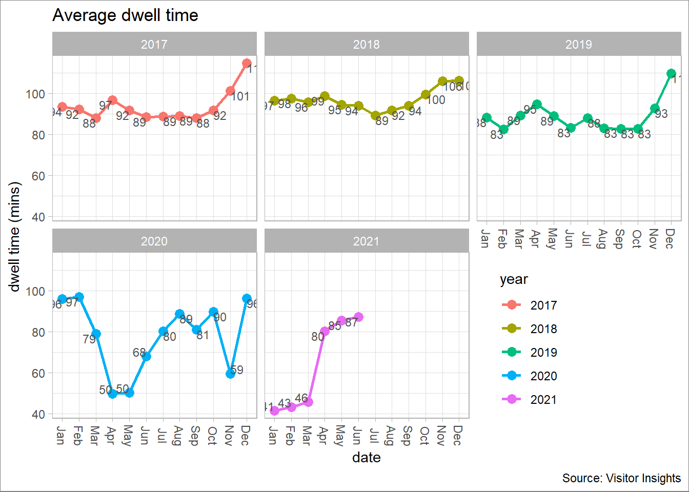
data_segment <- read.csv("C:/Users/Laurent/OneDrive - ROCS/VI/segment_visits.csv", header=TRUE, fileEncoding="UTF-8-BOM")
as_tibble(data_segment)## # A tibble: 20 x 6
## pid name segment total_visits year pct
## <int> <chr> <chr> <int> <int> <dbl>
## 1 100001 Training Shopping Centre national 1908882 2017 0.870
## 2 100001 Training Shopping Centre overseas 4914 2017 0.00224
## 3 100001 Training Shopping Centre resident 226636 2017 0.103
## 4 100001 Training Shopping Centre worker 54830 2017 0.0250
## 5 100001 Training Shopping Centre national 1845286 2018 0.845
## 6 100001 Training Shopping Centre overseas 11002 2018 0.00504
## 7 100001 Training Shopping Centre resident 254538 2018 0.117
## 8 100001 Training Shopping Centre worker 72074 2018 0.0330
## 9 100001 Training Shopping Centre national 1770510 2019 0.815
## 10 100001 Training Shopping Centre overseas 1247 2019 0.000574
## 11 100001 Training Shopping Centre resident 261872 2019 0.121
## 12 100001 Training Shopping Centre worker 138101 2019 0.0636
## 13 100001 Training Shopping Centre national 1628728 2020 0.789
## 14 100001 Training Shopping Centre overseas 1252 2020 0.000607
## 15 100001 Training Shopping Centre resident 256928 2020 0.124
## 16 100001 Training Shopping Centre worker 177076 2020 0.0858
## 17 100001 Training Shopping Centre national 5707971 2021 0.745
## 18 100001 Training Shopping Centre overseas 805 2021 0.000105
## 19 100001 Training Shopping Centre resident 1180274 2021 0.154
## 20 100001 Training Shopping Centre worker 771590 2021 0.101segment_filtered <- filter (data_segment, segment == "national"| segment == "resident" | segment == "worker")
g7 <- ggplot(segment_filtered, aes(fill= segment, y= pct, x= year)) +
geom_bar(position="dodge", stat="identity", fill = "cadetblue4") +
geom_text(aes(label = scales::percent((pct),0.1),
y = pct,
group = year,),
position = position_dodge(width = 0.9),
vjust = -0.4,
colour="black",
size = 3.5) +
ggtitle("Studying 4 species..") +
facet_wrap(~segment) +
theme_bw() +
scale_y_continuous(labels=percent) +
xlab("")+
labs(y="perc.(%)",
x="",
title="Visitors by segment",
caption = "Source: Visitor Insights")
g7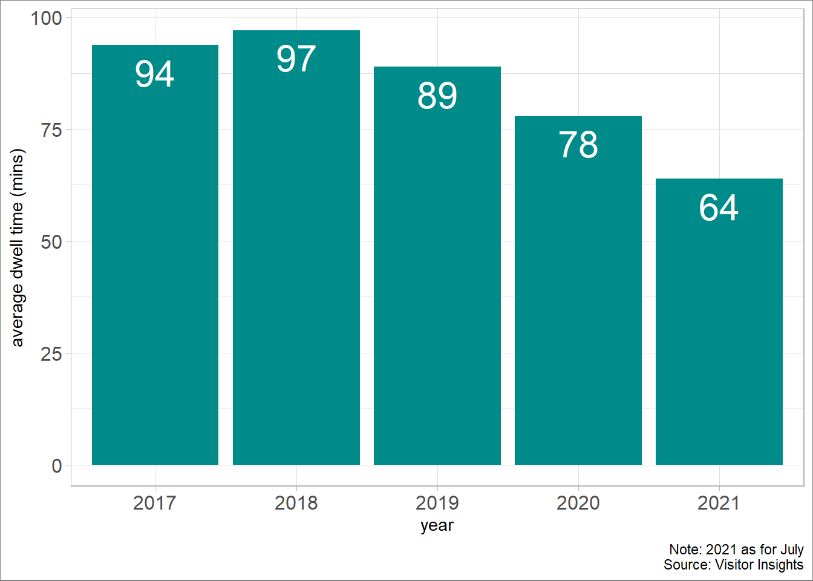
data_sector <- read.csv("C:/Users/Laurent/OneDrive - ROCS/VI/visit_sectors.csv", header=TRUE, fileEncoding="UTF-8-BOM")
as_tibble(data_sector)## # A tibble: 37 x 5
## year pid name sector pct
## <int> <int> <chr> <chr> <dbl>
## 1 2017 100001 Training Shopping Centre Clothing 0.298
## 2 2018 100001 Training Shopping Centre Clothing 0.299
## 3 2019 100001 Training Shopping Centre Clothing 0.296
## 4 2020 100001 Training Shopping Centre Clothing 0.226
## 5 2017 100001 Training Shopping Centre Department Stores 0.196
## 6 2018 100001 Training Shopping Centre Department Stores 0.191
## 7 2019 100001 Training Shopping Centre Department Stores 0.189
## 8 2020 100001 Training Shopping Centre Department Stores 0.176
## 9 2017 100001 Training Shopping Centre Domestic Appliances 0.0475
## 10 2018 100001 Training Shopping Centre Domestic Appliances 0.0499
## # ... with 27 more rowsdata_sector <- arrange(data_sector, desc(pct))
data_sector <- filter (data_sector, sector == "Clothing"| sector == "Department Stores" | sector == "Fast Food" | sector == "Supermarket" | sector == "Domestic Appliances")
g8 <- ggplot(data_sector, aes(fill= sector, y= pct, x= year)) +
geom_bar(position="dodge", stat="identity", fill = "darkcyan") +
geom_text(aes(label = scales::percent((pct),.2),
y = pct,
group = year,),
position = position_dodge(width = 0.9),
vjust = 1.5,
colour="white",
size = 3) +
facet_wrap(~sector) +
theme_grey() +
theme(legend.position="none") +
xlab("")+
scale_y_continuous(labels=percent) +
labs(y="perc.(%)",
title="Visits by sector",
subtitle ="Selected sectors",
caption = "Source: Visitor Insights")
g8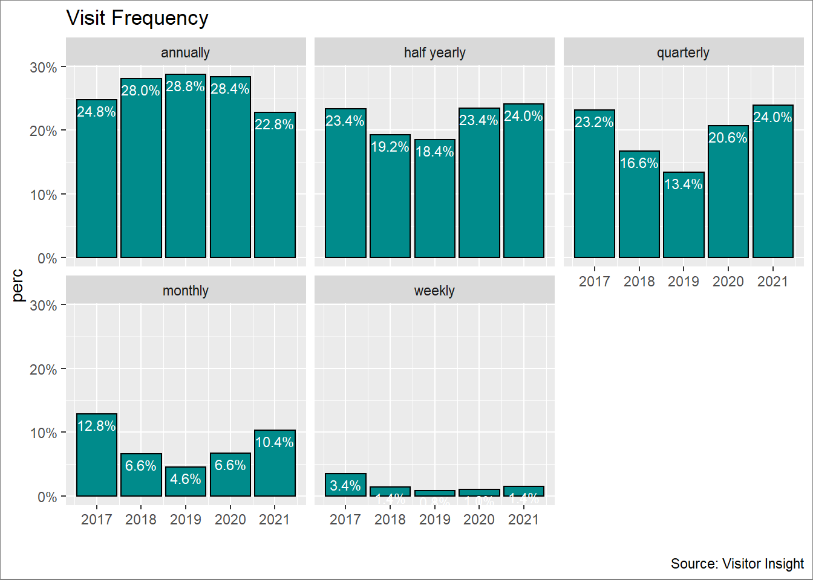
data_dwell <- read.csv("C:/Users/Laurent/OneDrive - ROCS/VI/visit_dwell_time.csv", header=TRUE, fileEncoding="UTF-8-BOM")
data_dwell <- data_dwell %>%
mutate(month = as.Date(month)) %>%
mutate(year = as.character(year))
data_dwell <- data_dwell %>%
mutate(mm = fct_relevel(mm,
"Jan", "Feb", "Mar","Apr", "May", "Jun",
"Jul", "Aug", "Sep", "Oct", "Nov", "Dec"))
as_tibble(data_dwell)## # A tibble: 54 x 6
## pid name month dwell year mm
## <int> <chr> <date> <dbl> <chr> <fct>
## 1 100001 Training Shopping Centre 2017-01-01 93.6 2017 Jan
## 2 100001 Training Shopping Centre 2017-02-01 92.4 2017 Feb
## 3 100001 Training Shopping Centre 2017-03-01 88.1 2017 Mar
## 4 100001 Training Shopping Centre 2017-04-01 96.8 2017 Apr
## 5 100001 Training Shopping Centre 2017-05-01 91.9 2017 May
## 6 100001 Training Shopping Centre 2017-06-01 88.6 2017 Jun
## 7 100001 Training Shopping Centre 2017-07-01 88.7 2017 Jul
## 8 100001 Training Shopping Centre 2017-08-01 89.1 2017 Aug
## 9 100001 Training Shopping Centre 2017-09-01 88 2017 Sep
## 10 100001 Training Shopping Centre 2017-10-01 91.9 2017 Oct
## # ... with 44 more rowsg9 <- ggplot(data = data_dwell, aes(month, dwell)) +
scale_y_continuous(labels = scales::comma)+
geom_line() +
geom_point()+
scale_x_date(labels = scales::label_date("%B\n%Y"))+
labs(y="dwell time (mins)",
x="date",
title = paste("Average dwell time"))
ggplotly(g9) g10 <- ggplot(data_dwell, aes(month, dwell)) +
geom_point(colour = "darkturquoise" ,
size = 3,
na.rm = TRUE)+
geom_line(na.rm = TRUE,
colour = "darkturquoise", size = 1.3) +
annotate(
geom = "segment", x = ymd("2020-03-23"), y = 105, xend = ymd("2020-03-23"), yend = 95,
arrow = arrow(length = unit(2, "mm"))
) +
annotate(geom = "text", x = ymd("2020-03-12"), y = 110, label = "lockdown\n23 March 2020", hjust = "left") +
theme_light()
g10 +
scale_x_date(labels = scales::label_date("%B\n%Y"))+
labs(y="dwell time (mins)",
x="date",
title = paste("Average dwell time"),
caption = "Source: Visitor Insights")
g11 <- ggplot(data_dwell, aes(mm, dwell, color = year)) +
scale_y_continuous(labels = scales::comma)+
geom_line(aes(group = year), size = 1)+
geom_point(aes(group = year), size = 3)+
scale_fill_manual('Program Type')+
facet_wrap(~year,nrow = 2)+
theme_light()+
geom_text(aes(label = round(dwell, 0)),
colour = "grey32",
size = 3,
vjust = "inward", hjust = "outward",
show.legend = FALSE)
g11 +
theme(legend.position = c(1, 0), legend.justification = c(2.6, 0))+
labs(y="dwell time (mins)",
x="date",
title = paste("Average dwell time"),
caption = "Source: Visitor Insights")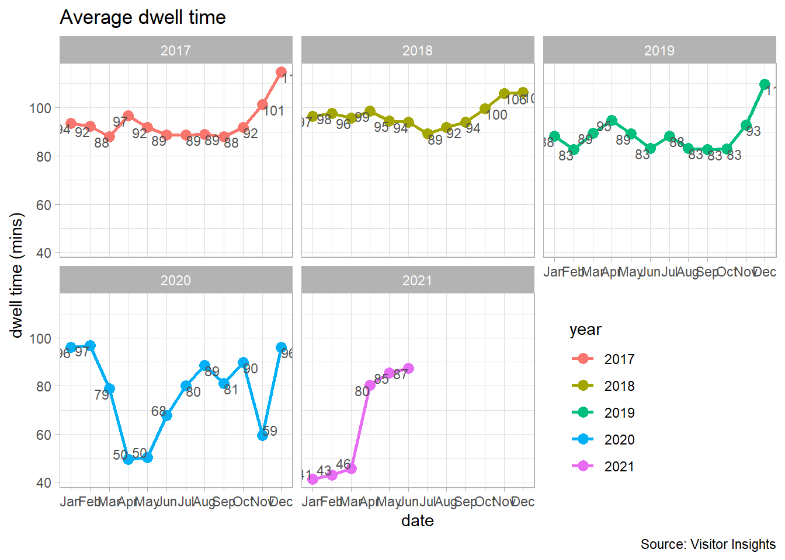
data_dwell_avg <- data_dwell %>%
group_by(year) %>%
summarize(dwell = mean(dwell))
g12 <- ggplot(data_dwell_avg, aes(x = year, y = dwell)) +
geom_col(fill = "cyan4")+
scale_y_continuous(labels = scales::comma) +
theme_light() +
geom_text(aes(label = round(dwell, 0)),
position = position_dodge(width = 0.9),
size = 8,
colour = "white",
vjust = 1.5)
g12 +
labs(y="average dwell time (mins)",
x="year",
caption = "Source: Visitor Insights")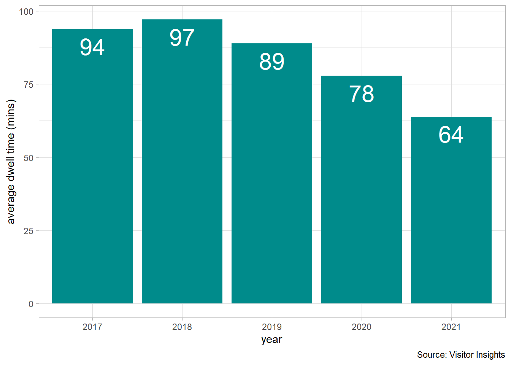
data_hour <- read.csv("C:/Users/Laurent/OneDrive - ROCS/VI/visit_hour.csv", header=TRUE, fileEncoding="UTF-8-BOM")
data_hour <- data_hour %>%
mutate(year = as.character(year))
as_tibble(data_hour)## # A tibble: 120 x 7
## pid name year hour avg_visits total_visits_ye~ pct
## <int> <chr> <chr> <int> <dbl> <dbl> <dbl>
## 1 374342 intu Merry Hill, West~ 2017 0 340. 59710. 0.00569
## 2 374342 intu Merry Hill, West~ 2017 1 293. 59710. 0.00490
## 3 374342 intu Merry Hill, West~ 2017 2 327. 59710. 0.00547
## 4 374342 intu Merry Hill, West~ 2017 3 280. 59710. 0.00469
## 5 374342 intu Merry Hill, West~ 2017 4 342. 59710. 0.00573
## 6 374342 intu Merry Hill, West~ 2017 5 337. 59710. 0.00564
## 7 374342 intu Merry Hill, West~ 2017 6 739. 59710. 0.0124
## 8 374342 intu Merry Hill, West~ 2017 7 946. 59710. 0.0159
## 9 374342 intu Merry Hill, West~ 2017 8 1506. 59710. 0.0252
## 10 374342 intu Merry Hill, West~ 2017 9 2580. 59710. 0.0432
## # ... with 110 more rowsg13 <- ggplot(data_hour, aes(x=hour, y=pct)) +
geom_bar(stat = "identity")+
facet_wrap(~year,nrow = 2) +
theme_light()+
scale_y_continuous(labels=percent) +
labs(y="perc (%)",
x="hour",
title="Visits by hour (%)",
caption = "Source: Visitor Insights")
plot(g13)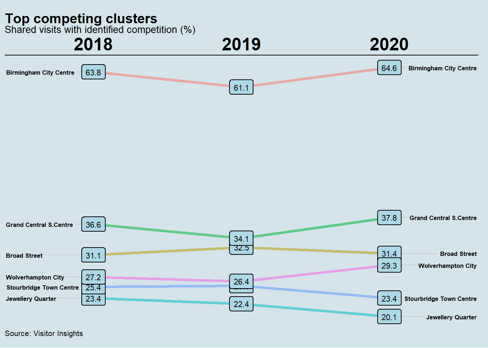
## time ranges
morning <- filter (data_hour, hour == "6" | hour == "7"| hour == "8" | hour == "9")
mid_morning <- filter (data_hour, hour == "10" | hour == "11")
noon <- filter (data_hour, hour == "12" | hour == "13")
afternoon <- filter (data_hour, hour == "14" | hour == "15" | hour == "16" | hour == "17")
evening <- filter (data_hour, hour == "18" | hour == "19" | hour == "20" | hour == "21")
night <- filter (data_hour, hour == "22" | hour == "23" | hour == "0" | hour == "1" | hour == "2" | hour == "3" | hour == "4" | hour == "5")
# updating the data frames including the field season
morning <- mutate(morning, period = "morning (6:00 - 9:59)")
mid_morning <- mutate(mid_morning,period = "mid-morning (10:00 - 11:59)")
noon <- mutate(noon,period = "noon (12:00 - 13:59)")
afternoon <- mutate(afternoon, period = "afternoon (14:00 - 17:59)")
evening <- mutate(evening, period = "evening (18:00 - 21:59)")
night <- mutate(night, period = "night (22:00 - 5:59)")
## concatenate
data_hour_period <- full_join(morning, mid_morning, by = NULL, copy = FALSE)## Joining, by = c("pid", "name", "year", "hour", "avg_visits", "total_visits_year", "pct", "period")## Joining, by = c("pid", "name", "year", "hour", "avg_visits", "total_visits_year", "pct", "period")## Joining, by = c("pid", "name", "year", "hour", "avg_visits", "total_visits_year", "pct", "period")## Joining, by = c("pid", "name", "year", "hour", "avg_visits", "total_visits_year", "pct", "period")## Joining, by = c("pid", "name", "year", "hour", "avg_visits", "total_visits_year", "pct", "period")data_hour <- data_hour_period5 %>%
mutate(period = fct_relevel(period,
"morning (6:00 - 9:59)", "mid-morning (10:00 - 11:59)", "noon (12:00 - 13:59)",
"afternoon (14:00 - 17:59)", "evening (18:00 - 21:59)", "night (22:00 - 5:59)"))
data_hour <- data_hour %>%
group_by(year, period) %>%
summarize(pct = sum(pct)) ## `summarise()` has grouped output by 'year'. You can override using the `.groups` argument.g14 <- ggplot(data_hour, aes(fill= period, y= pct, x= year)) +
geom_bar(position="dodge", stat="identity", colour = "black", fill = "blue4") +
geom_text(aes(label = scales::percent((pct),.2),
y = pct,
group = year,),
position = position_dodge(width = 0.9),
vjust = 1.5,
colour="white",
size = 3) +
facet_wrap(~period) +
theme(legend.position="none") +
scale_y_continuous(labels=percent) +
labs(y = "perc.(%)",
x = "year",
title="Daily period ranges",
caption = "Source: Visitor Insights")
plot(g14)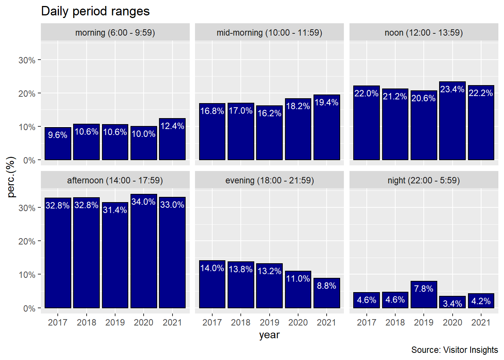
data_age <- read.csv("C:/Users/Laurent/OneDrive - ROCS/VI/visit_age.csv", header=TRUE, fileEncoding="UTF-8-BOM")
as_tibble(data_age)## # A tibble: 52 x 13
## month mm year pid name up_to_19 age_20_to_29 age_30_to_39
## <chr> <int> <int> <int> <chr> <dbl> <dbl> <dbl>
## 1 01-Mar-~ 3 2017 100001 Training Shop~ 0.0785 0.155 0.155
## 2 01-Apr-~ 4 2017 100001 Training Shop~ 0.0787 0.158 0.155
## 3 01-May-~ 5 2017 100001 Training Shop~ 0.0787 0.155 0.155
## 4 01-Jun-~ 6 2017 100001 Training Shop~ 0.0784 0.153 0.153
## 5 01-Jul-~ 7 2017 100001 Training Shop~ 0.0784 0.154 0.154
## 6 01-Aug-~ 8 2017 100001 Training Shop~ 0.0785 0.155 0.155
## 7 01-Sep-~ 9 2017 100001 Training Shop~ 0.0771 0.153 0.153
## 8 01-Oct-~ 10 2017 100001 Training Shop~ 0.0771 0.151 0.152
## 9 01-Nov-~ 11 2017 100001 Training Shop~ 0.0768 0.152 0.152
## 10 01-Dec-~ 12 2017 100001 Training Shop~ 0.0778 0.157 0.154
## # ... with 42 more rows, and 5 more variables: age_40_to_49 <dbl>,
## # age_50_to_59 <dbl>, age_60_to_69 <dbl>, age_70_to_79 <dbl>,
## # age_80_and_over <dbl>data_age <- data_age %>%
pivot_longer(c(`up_to_19`, `age_20_to_29`, `age_30_to_39`, `age_40_to_49`, `age_50_to_59`, `age_60_to_69`, `age_70_to_79`, `age_80_and_over`), names_to = "age", values_to = "pct")
# recoding the factor season
data_age <- data_age %>%
mutate(age = fct_recode(age,
"19 and below" = "up_to_19",
"20-29" = "age_20_to_29",
"30-39" = "age_30_to_39",
"40-49" = "age_40_to_49",
"50-59" = "age_50_to_59",
"60-69" = "age_60_to_69",
"70-79" = "age_70_to_79",
"80 and over" = "age_80_and_over"))
data_age <- data_age %>%
mutate(age = fct_relevel(age,
"19 and below", "20-29", "30-39",
"40-49", "50-59", "60-69","70-79", "80 and over" ))
g15 <- ggplot(data_age , mapping = aes(
x = year,
y = age)) +
geom_tile(mapping = aes (fill = pct)) +
scale_fill_distiller(labels = percent, trans = 'reverse') +
theme_minimal() +
labs(y="age range",
x="year",
title="Age frequency",
caption = "Source: Visitor Insights")
g15 +
guides(fill = guide_legend( label.hjust = 1, reverse = TRUE, title = "scale"))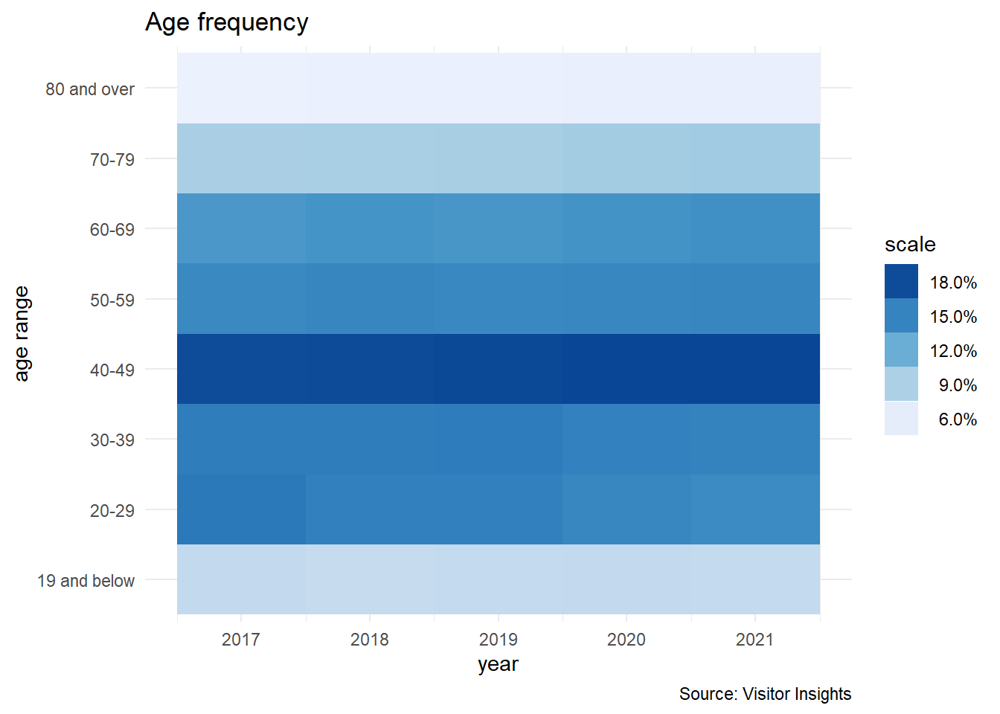
data_stores <- read.csv("C:/Users/Laurent/OneDrive - ROCS/VI/visit_stores_per_trip.csv", header=TRUE, fileEncoding="UTF-8-BOM")
data_stores <- data_stores %>%
mutate(date = as.Date(date)) %>%
mutate(year = as.character(year))
as_tibble(data_stores)## # A tibble: 198 x 7
## date pid name venues pct month year
## <date> <int> <chr> <int> <dbl> <chr> <chr>
## 1 0001-01-20 100001 Training Shopping Centre 1 0.716 Jan 2018
## 2 0001-01-20 100001 Training Shopping Centre 4 0.143 Jan 2019
## 3 0001-01-20 100001 Training Shopping Centre 3 0.0714 Jan 2019
## 4 0001-01-20 100001 Training Shopping Centre 2 0.405 Jan 2019
## 5 0001-01-20 100001 Training Shopping Centre 1 0.381 Jan 2019
## 6 0001-01-20 100001 Training Shopping Centre 4 0.0143 Jan 2018
## 7 0001-01-20 100001 Training Shopping Centre 2 0.214 Jan 2018
## 8 0001-01-20 100001 Training Shopping Centre 4 0.0367 Jan 2020
## 9 0001-01-20 100001 Training Shopping Centre 3 0.0642 Jan 2020
## 10 0001-01-20 100001 Training Shopping Centre 2 0.225 Jan 2020
## # ... with 188 more rows## `summarise()` has grouped output by 'year'. You can override using the `.groups` argument.g16 <- ggplot(data_stores_summary, aes(x = venues, y = pct)) +
geom_col(fill = "royalblue4")+
scale_y_continuous(labels=percent, limits = c(0, 0.8)) +
theme_bw() +
facet_wrap(~year) +
geom_text(aes(label = scales::percent((pct),0.1),
y = pct,
group = year,),
position = position_dodge(width = 0.9),
vjust = -0.4,
colour="royalblue4",
size = 3.5)
g16 +
labs(y="perc.(%)",
x="venues",
title="Number of indoor locations visited per trip",
caption = "Source: Visitor Insights")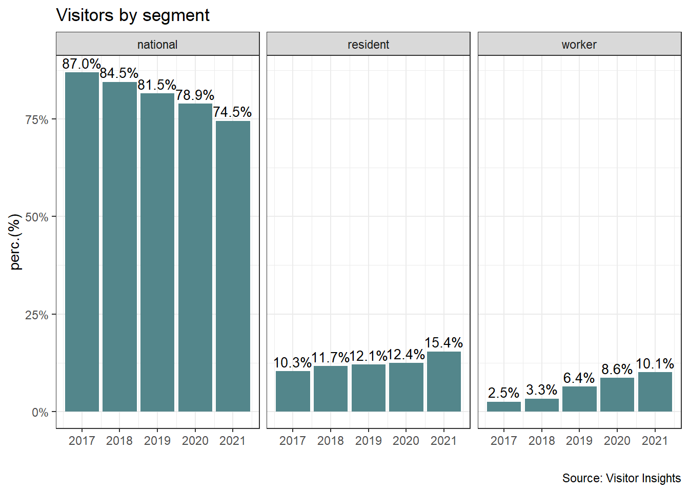
competition <- read.csv("C:/Users/Laurent/OneDrive - ROCS/VI/competition.csv", header=TRUE, fileEncoding="UTF-8-BOM")
competition <- competition %>%
mutate(year = as.character(year))
as_tibble(competition)## # A tibble: 18 x 5
## name pid competing_cluster shared_visitors year
## <chr> <int> <chr> <dbl> <chr>
## 1 Training Shopping Centre 100001 Birmingham City Centre 63.8 2018
## 2 Training Shopping Centre 100001 Birmingham City Centre 61.1 2019
## 3 Training Shopping Centre 100001 Birmingham City Centre 64.6 2020
## 4 Training Shopping Centre 100001 Broad Street 31.1 2018
## 5 Training Shopping Centre 100001 Broad Street 32.5 2019
## 6 Training Shopping Centre 100001 Broad Street 31.4 2020
## 7 Training Shopping Centre 100001 Grand Central S.Centre 36.6 2018
## 8 Training Shopping Centre 100001 Grand Central S.Centre 34.1 2019
## 9 Training Shopping Centre 100001 Grand Central S.Centre 37.8 2020
## 10 Training Shopping Centre 100001 Jewellery Quarter 23.4 2018
## 11 Training Shopping Centre 100001 Jewellery Quarter 22.4 2019
## 12 Training Shopping Centre 100001 Jewellery Quarter 20.1 2020
## 13 Training Shopping Centre 100001 Stourbridge Town Centre 25.4 2018
## 14 Training Shopping Centre 100001 Stourbridge Town Centre 25.6 2019
## 15 Training Shopping Centre 100001 Stourbridge Town Centre 23.4 2020
## 16 Training Shopping Centre 100001 Wolverhampton City 27.2 2018
## 17 Training Shopping Centre 100001 Wolverhampton City 26.4 2019
## 18 Training Shopping Centre 100001 Wolverhampton City 29.3 2020competition <- competition %>%
filter (year == "2018" | year == "2019" | year == "2020")
g2_2 <- newggslopegraph(competition,
Times = year,
Measurement = shared_visitors,
Grouping = competing_cluster,
Title = "Top competing clusters",
SubTitle = "Shared visits with identified competition (%)",
Caption = "Source: Visitor Insights",
CaptionJustify = "left",
XTextSize = 18,
LineThickness = 1.3,
YTextSize = 2.2,
ThemeChoice = "econ",
DataLabelPadding = 0.3,
DataLabelLineSize = 0.4,
DataTextSize = 2.9,
DataLabelFillColor = "lightblue")
plot(g2_2)Groves, P. D. 2013. Principles of Gnss, Inertial, and Multisensor Integrated Navigation Systems. ArtechHouse.
Villanueva, & Chen, R. A. M. 2019. Ggplot2: Elegant Graphics for Data Analysis. Springer.
Visitor Insights. 2021. Visitor Insights Ltd. https://terain.fetchanalytics.ai/home.
Wickham, H. 2010. “A Layered Grammar of Graphics.” Journal of Computational and Graphical Statistics 19: 3–28.